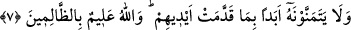

Cüneyd Bağdâdî (k.s.) şöyle der: Seven âşık Mevlâ’sına âşıktır. Ölümü, dünyada
kalmaktan çok sever. Zira Allah’a kavuşmak ölümle olur. Bu sebeple de devamlı ölümü
temennî eder.
7. Ama onlar, önceden yaptıklarından dolayı ölümü asla temenni etmezler. Allah,
zâlimleri çok iyi bilir.
“Ama onlar, önceden yaptıklarından dolayı ölümü asla temenni etmezler.” Bu âyet-i
kerîme yahûdilerin tutumlarından meydana gelecek olanı haber vermektedir. “Dünyada
kaldıkları müddetçe” demektir. Bakara sûresinde “Ölümü asla temenni
etmeyeceklerdir” (el-Bakara, 2/95) buyurulmuştur. Cennetin özel olarak onlara âid
olduğuna dâir iddiâları kesin ve aşırı bir tarzda olduğu için, Allah Teâlâ olumsuzluk
anlamına olan sözlerin en mübalağalısı ile reddetmiştir. Cuma sûresinde Allah’ın
dostları olduklarına dâir iddiâları eksik ve tereddüdlüdür. Bu sebeple iddiâlarının red
edilmesi için “lâ” kelimesiyle yetinilmiştir. Bürhanü’l- Kur’an adlı eserde de böyle
kayd edilmiştir.
“Önceden yaptıklarından dolayı,” ifâdesi, Tevratın hükümlerini bozmak ve
Peygamber Hz. Muhammed’in (a.s.) sıfatını değiştirmek gibi işlemiş oldukları
cehenneme girmeyi gerektiren küfür ve isyanlardan dolayı ölümü temenni etmekten
kesin olarak kaçınırlar, demektir. Onlar işledikleri bu gibi isyanlar sebebiyle ölümden
sonra azab edileceklerini bilirler. Âyette geçen “el” anlamındaki “yed” kelimesi,
insanın organlarından her işinde baş vurduğu ve kendisine en çok ihtiyaç duyulduğundan
dolayı, bazan kişinin kendisi, bazan de kudret yerine ifâde edilmiştir. Burada ise kişiler
anlamındadır. Ona çok ihtiyaçları olduğu için sanki kişilerin kendileriymiş gibi bir
mânâda kullanılmıştır.
“Allah zâlimleri çok iyi bilir.” Bütün işlerinde zâlim olduklarını belgelemek için,
zâlimler kelimesi zamir gelmesi gerekirken açıkta isim olarak getirilmiştir. Mânâ
şöyledir: Allah onları, onlardan meydana gelecek olan çeşitli azapları gerektirecek
zulüm ve isyanları ve onları bu azaplara sürükleyecek olan haktan kaçışlarını bilir.
Gerçekten de ifâde buyurulanlar, olduğu gibi gerçekleşti ve onlardan hiçbiri ölümünü
istemedi.
Hadis-i şerifte şöyle buyruldu: “Sizden hiç biriniz ölümü temenni etmesin! İyi ve
sâlih amel sâhibi kimse yaşadığı takdirde iyiliklerini artırır. Bu da onun için iyidir,
hayırdır. Günahkar ise tevbe ve itâat etmek sûretiyle Allah’ın rızâsını kazanabilir.”
[125]
Allah dostlarından bazılarının ölümü temenni ettikleri konusunda rivâyet edilenler ise,
ayrılık ateşine yanmaktan dolayı ilâhî muhabbet ve sevgilerinin taşkınlığından ve